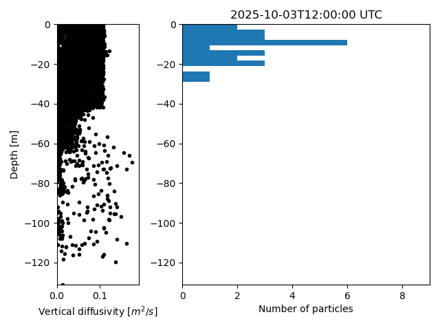
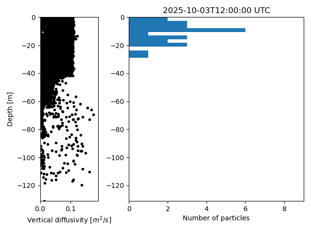

Note
Go to the end to download the full example code
Oil vertical mixing
import os
from datetime import timedelta
from opendrift.readers import reader_netCDF_CF_generic
from opendrift.models.openoil import OpenOil
o = OpenOil(loglevel=20) # Set loglevel to 0 for debug information
ncfile = 'oilmixing.nc'
import_file = False # Set to True to import previous run
if import_file is True:
o.io_import_file(ncfile)
else:
reader_arome = reader_netCDF_CF_generic.Reader('https://thredds.met.no/thredds/dodsC/mepslatest/meps_lagged_6_h_latest_2_5km_latest.nc')
reader_norkyst = reader_netCDF_CF_generic.Reader('https://thredds.met.no/thredds/dodsC/sea/norkyst800m/1h/aggregate_be')
o.add_reader([reader_norkyst, reader_arome])
# Seed oil elements at defined position and time
o.seed_elements(lon=4.9, lat=62.1, z=0, radius=1000, number=2000,
time=reader_arome.start_time)
# Adjusting some configuration
#o.set_config('vertical_mixing:diffusivitymodel', 'windspeed_Sundby1983')
# Running model
o.run(end_time=reader_arome.start_time + timedelta(hours=12),
time_step=900, time_step_output=1800, outfile=ncfile)
15:09:42 INFO opendrift.models.basemodel:529: OpenDriftSimulation initialised (version 1.10.7 / v1.10.6-58-g52727c5)
15:09:42 INFO opendrift.readers.reader_netCDF_CF_generic:92: Opening dataset: https://thredds.met.no/thredds/dodsC/mepslatest/meps_lagged_6_h_latest_2_5km_latest.nc
/opt/conda/envs/opendrift/lib/python3.11/site-packages/pyproj/crs/crs.py:1286: UserWarning: You will likely lose important projection information when converting to a PROJ string from another format. See: https://proj.org/faq.html#what-is-the-best-format-for-describing-coordinate-reference-systems
proj = self._crs.to_proj4(version=version)
15:09:44 INFO opendrift.readers.reader_netCDF_CF_generic:92: Opening dataset: https://thredds.met.no/thredds/dodsC/sea/norkyst800m/1h/aggregate_be
/opt/conda/envs/opendrift/lib/python3.11/site-packages/pyproj/crs/crs.py:1286: UserWarning: You will likely lose important projection information when converting to a PROJ string from another format. See: https://proj.org/faq.html#what-is-the-best-format-for-describing-coordinate-reference-systems
proj = self._crs.to_proj4(version=version)
15:09:48 INFO opendrift.models.openoil.openoil:1573: Oil type not specified, using default: GENERIC BUNKER C
15:09:48 INFO opendrift.models.openoil.openoil:1423: setting oil_type to: GENERIC BUNKER C
15:09:48 INFO opendrift.models.openoil.adios.dirjs:71: Querying ADIOS database for oil: GENERIC BUNKER C
15:09:48 INFO opendrift.models.openoil.openoil:1580: Using density 971.1 and viscosity 0.0005020658058702914 of oiltype GENERIC BUNKER C
15:09:48 INFO opendrift.models.basemodel:2571: Fallback values will be used for the following variables which have no readers:
15:09:48 INFO opendrift.models.basemodel:2574: sea_surface_wave_significant_height: 0.000000
15:09:48 INFO opendrift.models.basemodel:2574: sea_surface_wave_stokes_drift_x_velocity: 0.000000
15:09:48 INFO opendrift.models.basemodel:2574: sea_surface_wave_stokes_drift_y_velocity: 0.000000
15:09:48 INFO opendrift.models.basemodel:2574: sea_surface_wave_period_at_variance_spectral_density_maximum: 0.000000
15:09:48 INFO opendrift.models.basemodel:2574: sea_surface_wave_mean_period_from_variance_spectral_density_second_frequency_moment: 0.000000
15:09:48 INFO opendrift.models.basemodel:2574: sea_ice_area_fraction: 0.000000
15:09:48 INFO opendrift.models.basemodel:2574: sea_ice_x_velocity: 0.000000
15:09:48 INFO opendrift.models.basemodel:2574: sea_ice_y_velocity: 0.000000
15:09:48 INFO opendrift.models.basemodel:2574: ocean_vertical_diffusivity: 0.020000
15:09:48 INFO opendrift.models.basemodel:2574: ocean_mixed_layer_thickness: 50.000000
15:09:48 INFO opendrift.models.basemodel:2733: Adding a dynamical landmask with max. priority based on assumed maximum speed of 1.3 m/s. Adding a customised landmask may be faster...
15:09:54 INFO opendrift.models.basemodel:1681: Using existing reader for land_binary_mask
15:09:54 INFO opendrift.models.basemodel:1693: All points are in ocean
15:09:54 INFO opendrift.models.openoil.openoil:607: Oil-water surface tension is 0.035282 Nm
15:09:55 INFO opendrift.models.basemodel:2862: 2023-05-22 12:00:00 - step 1 of 48 - 2000 active elements (0 deactivated)
15:09:57 INFO opendrift.models.basemodel:2862: 2023-05-22 12:15:00 - step 2 of 48 - 2000 active elements (0 deactivated)
15:09:58 INFO opendrift.models.basemodel:2862: 2023-05-22 12:30:00 - step 3 of 48 - 2000 active elements (0 deactivated)
15:09:58 INFO opendrift.models.basemodel:2862: 2023-05-22 12:45:00 - step 4 of 48 - 2000 active elements (0 deactivated)
15:09:58 INFO opendrift.models.basemodel:2862: 2023-05-22 13:00:00 - step 5 of 48 - 2000 active elements (0 deactivated)
15:09:59 INFO opendrift.models.basemodel:2862: 2023-05-22 13:15:00 - step 6 of 48 - 2000 active elements (0 deactivated)
15:10:00 INFO opendrift.models.basemodel:2862: 2023-05-22 13:30:00 - step 7 of 48 - 2000 active elements (0 deactivated)
15:10:00 INFO opendrift.models.basemodel:2862: 2023-05-22 13:45:00 - step 8 of 48 - 2000 active elements (0 deactivated)
15:10:00 INFO opendrift.models.basemodel:2862: 2023-05-22 14:00:00 - step 9 of 48 - 2000 active elements (0 deactivated)
15:10:01 INFO opendrift.models.basemodel:2862: 2023-05-22 14:15:00 - step 10 of 48 - 2000 active elements (0 deactivated)
15:10:02 INFO opendrift.models.basemodel:2862: 2023-05-22 14:30:00 - step 11 of 48 - 2000 active elements (0 deactivated)
15:10:02 INFO opendrift.models.basemodel:2862: 2023-05-22 14:45:00 - step 12 of 48 - 2000 active elements (0 deactivated)
15:10:03 INFO opendrift.models.basemodel:2862: 2023-05-22 15:00:00 - step 13 of 48 - 2000 active elements (0 deactivated)
15:10:03 INFO opendrift.models.basemodel:2862: 2023-05-22 15:15:00 - step 14 of 48 - 2000 active elements (0 deactivated)
15:10:04 INFO opendrift.models.basemodel:2862: 2023-05-22 15:30:00 - step 15 of 48 - 2000 active elements (0 deactivated)
15:10:04 INFO opendrift.models.basemodel:2862: 2023-05-22 15:45:00 - step 16 of 48 - 2000 active elements (0 deactivated)
15:10:05 INFO opendrift.models.basemodel:2862: 2023-05-22 16:00:00 - step 17 of 48 - 2000 active elements (0 deactivated)
15:10:05 INFO opendrift.models.basemodel:2862: 2023-05-22 16:15:00 - step 18 of 48 - 2000 active elements (0 deactivated)
15:10:06 INFO opendrift.models.basemodel:2862: 2023-05-22 16:30:00 - step 19 of 48 - 2000 active elements (0 deactivated)
15:10:06 INFO opendrift.models.basemodel:2862: 2023-05-22 16:45:00 - step 20 of 48 - 2000 active elements (0 deactivated)
15:10:07 INFO opendrift.models.basemodel:2862: 2023-05-22 17:00:00 - step 21 of 48 - 2000 active elements (0 deactivated)
15:10:07 INFO opendrift.models.basemodel:2862: 2023-05-22 17:15:00 - step 22 of 48 - 2000 active elements (0 deactivated)
15:10:08 INFO opendrift.models.basemodel:2862: 2023-05-22 17:30:00 - step 23 of 48 - 2000 active elements (0 deactivated)
15:10:09 INFO opendrift.models.basemodel:2862: 2023-05-22 17:45:00 - step 24 of 48 - 2000 active elements (0 deactivated)
15:10:09 INFO opendrift.models.basemodel:2862: 2023-05-22 18:00:00 - step 25 of 48 - 2000 active elements (0 deactivated)
15:10:09 INFO opendrift.models.basemodel:2862: 2023-05-22 18:15:00 - step 26 of 48 - 2000 active elements (0 deactivated)
15:10:11 INFO opendrift.models.basemodel:2862: 2023-05-22 18:30:00 - step 27 of 48 - 2000 active elements (0 deactivated)
15:10:11 INFO opendrift.models.basemodel:2862: 2023-05-22 18:45:00 - step 28 of 48 - 2000 active elements (0 deactivated)
15:10:11 INFO opendrift.models.basemodel:2862: 2023-05-22 19:00:00 - step 29 of 48 - 2000 active elements (0 deactivated)
15:10:11 INFO opendrift.models.basemodel:2862: 2023-05-22 19:15:00 - step 30 of 48 - 2000 active elements (0 deactivated)
15:10:13 INFO opendrift.models.basemodel:2862: 2023-05-22 19:30:00 - step 31 of 48 - 2000 active elements (0 deactivated)
15:10:13 INFO opendrift.models.basemodel:2862: 2023-05-22 19:45:00 - step 32 of 48 - 2000 active elements (0 deactivated)
15:10:13 INFO opendrift.models.basemodel:2862: 2023-05-22 20:00:00 - step 33 of 48 - 2000 active elements (0 deactivated)
15:10:14 INFO opendrift.models.basemodel:2862: 2023-05-22 20:15:00 - step 34 of 48 - 2000 active elements (0 deactivated)
15:10:15 INFO opendrift.models.basemodel:2862: 2023-05-22 20:30:00 - step 35 of 48 - 2000 active elements (0 deactivated)
15:10:15 INFO opendrift.models.basemodel:2862: 2023-05-22 20:45:00 - step 36 of 48 - 2000 active elements (0 deactivated)
15:10:15 INFO opendrift.models.basemodel:2862: 2023-05-22 21:00:00 - step 37 of 48 - 2000 active elements (0 deactivated)
15:10:16 INFO opendrift.models.basemodel:2862: 2023-05-22 21:15:00 - step 38 of 48 - 2000 active elements (0 deactivated)
15:10:17 INFO opendrift.models.basemodel:2862: 2023-05-22 21:30:00 - step 39 of 48 - 2000 active elements (0 deactivated)
15:10:17 INFO opendrift.models.basemodel:2862: 2023-05-22 21:45:00 - step 40 of 48 - 2000 active elements (0 deactivated)
15:10:18 INFO opendrift.models.basemodel:2862: 2023-05-22 22:00:00 - step 41 of 48 - 2000 active elements (0 deactivated)
15:10:18 INFO opendrift.models.basemodel:2862: 2023-05-22 22:15:00 - step 42 of 48 - 2000 active elements (0 deactivated)
15:10:20 INFO opendrift.models.basemodel:2862: 2023-05-22 22:30:00 - step 43 of 48 - 2000 active elements (0 deactivated)
15:10:20 INFO opendrift.models.basemodel:2862: 2023-05-22 22:45:00 - step 44 of 48 - 2000 active elements (0 deactivated)
15:10:20 INFO opendrift.models.basemodel:2862: 2023-05-22 23:00:00 - step 45 of 48 - 2000 active elements (0 deactivated)
15:10:20 INFO opendrift.models.basemodel:2862: 2023-05-22 23:15:00 - step 46 of 48 - 2000 active elements (0 deactivated)
15:10:23 INFO opendrift.models.basemodel:2862: 2023-05-22 23:30:00 - step 47 of 48 - 2000 active elements (0 deactivated)
15:10:23 INFO opendrift.models.basemodel:2862: 2023-05-22 23:45:00 - step 48 of 48 - 2000 active elements (0 deactivated)
15:10:23 INFO opendrift.export.io_netcdf:111: Wrote 25 steps to file oilmixing.nc
/opt/conda/envs/opendrift/lib/python3.11/site-packages/numpy/ma/core.py:467: RuntimeWarning: invalid value encountered in cast
fill_value = np.array(fill_value, copy=False, dtype=ndtype)
Print and plot results
print(o)
o.plot(linecolor='z', fast=True)
o.plot_property('z')
o.plot_oil_budget()
o.animation(fast=True)
o.animate_vertical_distribution()
os.remove(ncfile) # cleaning up


===========================
--------------------
Reader performance:
--------------------
https://thredds.met.no/thredds/dodsC/sea/norkyst800m/1h/aggregate_be
0:00:23.8 total
0:00:00.0 preparing
0:00:22.7 reading
0:00:00.7 interpolation
0:00:00.0 interpolation_time
0:00:00.0 masking
0:00:01.0 rotating vectors
--------------------
https://thredds.met.no/thredds/dodsC/mepslatest/meps_lagged_6_h_latest_2_5km_latest.nc
--------------------
global_landmask
0:00:00.0 total
0:00:00.0 preparing
0:00:00.0 reading
0:00:00.0 masking
--------------------
Performance:
41.3 total time
5.1 configuration
6.3 preparing main loop
6.1 making dynamical landmask
0.0 moving elements to ocean
24.4 readers
0.0 global_landmask
0.3 postprocessing
29.5 main loop
24.0 https://thredds.met.no/thredds/dodsC/sea/norkyst800m/1h/aggregate_be
4.5 updating elements
2.1 oil weathering
0.0 updating viscosities
0.0 updating densities
2.0 evaporation
0.0 emulsification
0.0 dispersion
2.1 vertical mixing
0.4 cleaning up
--------------------
===========================
Model: OpenOil (OpenDrift version 1.10.7)
2000 active Oil particles (0 deactivated, 0 scheduled)
-------------------
Environment variables:
-----
sea_floor_depth_below_sea_level
sea_water_salinity
sea_water_temperature
upward_sea_water_velocity
x_sea_water_velocity
y_sea_water_velocity
1) https://thredds.met.no/thredds/dodsC/sea/norkyst800m/1h/aggregate_be
-----
x_wind
y_wind
1) https://thredds.met.no/thredds/dodsC/sea/norkyst800m/1h/aggregate_be
2) https://thredds.met.no/thredds/dodsC/mepslatest/meps_lagged_6_h_latest_2_5km_latest.nc
-----
land_binary_mask
1) global_landmask
-----
Readers not added for the following variables:
ocean_mixed_layer_thickness
ocean_vertical_diffusivity
sea_ice_area_fraction
sea_ice_x_velocity
sea_ice_y_velocity
sea_surface_wave_mean_period_from_variance_spectral_density_second_frequency_moment
sea_surface_wave_period_at_variance_spectral_density_maximum
sea_surface_wave_significant_height
sea_surface_wave_stokes_drift_x_velocity
sea_surface_wave_stokes_drift_y_velocity
Time:
Start: 2023-05-22 12:00:00 UTC
Present: 2023-05-23 00:00:00 UTC
Calculation steps: 48 * 0:15:00 - total time: 12:00:00
Output steps: 25 * 0:30:00
===========================
15:10:24 WARNING opendrift.models.basemodel:3206: Plotting fast. This will make your plots less accurate.
15:10:48 WARNING opendrift.models.basemodel:3206: Plotting fast. This will make your plots less accurate.
/opt/conda/envs/opendrift/lib/python3.11/site-packages/cartopy/mpl/geoaxes.py:1700: UserWarning: No data for colormapping provided via 'c'. Parameters 'cmap' will be ignored
result = super().scatter(*args, **kwargs)
15:10:49 INFO opendrift.models.basemodel:5325: Saving animation to /root/project/docs/source/gallery/animations/example_oil_verticalmixing_0.gif...
15:10:54 INFO opendrift.models.basemodel:3828: Time to make animation: 0:00:05.816494
15:10:54 INFO opendrift.models.basemodel:5325: Saving animation to /root/project/docs/source/gallery/animations/example_oil_verticalmixing_1.gif...
15:10:59 INFO opendrift.models.oceandrift:676: Time to make animation: 0:00:05.688468
 

Total running time of the script: ( 1 minutes 20.929 seconds)